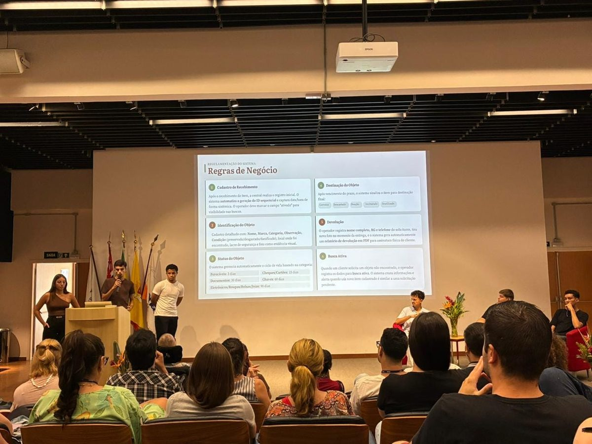
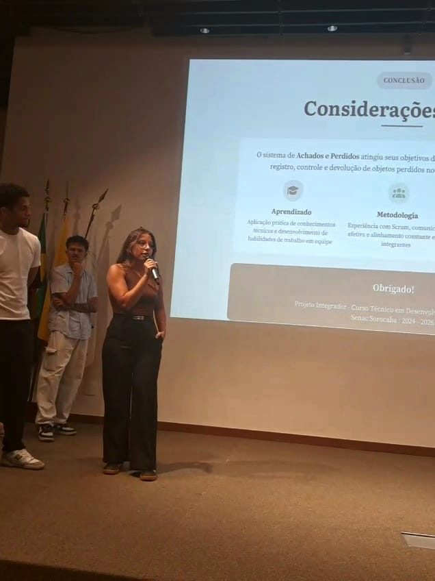

<!-- ================= PROJETOS ================= -->
<section class="section" id="projetos">
    <div class="container">
        <h2 class="section-title">Projetos</h2>
        <p class="section-lead">Meu projeto de destaque, desenvolvido em equipe no curso técnico.</p>

        <div class="projetos-grid">

            <article class="projeto-card publicado projeto-destaque">
                <div class="projeto-info">
                    <span class="status pronto">Projeto Integrador · Senac 2025</span>
                    <h3>Achados e Perdidos para o Shopping Iguatemi Sorocaba</h3>
                    <p class="projeto-papel">
                        <strong>Meu papel:</strong> Desenvolvedora de Banco de Dados e DBA, em uma equipe de 6 pessoas que trabalhou com Scrum.
                    </p>

                    <h4>Problema</h4>
                    <p>
                        A operação de achados e perdidos dependia de planilhas paralelas e sistemas defasados.
                        Isso gerava falhas humanas no cruzamento de informações e dificultava a destinação
                        segura dos itens.
                    </p>

                    <h4>Solução</h4>
                    <p>
                        Um sistema desktop que centraliza o cadastro dos objetos e controla os prazos de guarda
                        por categoria. Ao cadastrar um item, ele cruza categoria, marca e local com as
                        solicitações de perda abertas e avisa o operador quando há correspondência.
                    </p>

                    <ul class="projeto-lista">
                        <li>Baixa em 4 etapas, com registro fotográfico e termo de entrega em PDF</li>
                        <li>Controle de acesso por perfil (Administrador e Operador)</li>
                        <li>Notificações internas de prazos vencidos e possíveis correspondências</li>
                        <li>Painel gerencial com gráficos e exportação para Excel</li>
                    </ul>

                    <ul class="tags">
                        <li>Java 21</li>
                        <li>JavaFX</li>
                        <li>MySQL</li>
                        <li>Hibernate / JPA</li>
                        <li>Maven</li>
                        <li>Scrum</li>
                    </ul>

                    <div class="projeto-links">
                        <a href="https://github.com/dutraxz/system-achados-perdidos-portfolio" target="_blank" rel="noopener">
                            <i class="fab fa-github"></i> Ver telas e documentação
                        </a>
                    </div>
                    <p class="projeto-aviso">
                        O código-fonte é privado. Todos os dados mostrados nas demonstrações são fictícios.
                    </p>
                </div>

                <div class="projeto-fotos">
                    <figure>
                        
                        <figcaption>Apresentação das regras de negócio</figcaption>
                    </figure>
                    <figure>
                        
                        <figcaption>Apresentação final do projeto</figcaption>
                    </figure>
                </div>
            </article>

        </div>

        <div class="projetos-nota">
            <i class="fa-solid fa-circle-info" aria-hidden="true"></i>
            <p>
                <strong>Próximos projetos:</strong>
                estou desenvolvendo projetos com IA e automação. Eles serão publicados aqui com
                o problema, a solução, as ferramentas usadas e o resultado.
            </p>
        </div>
    </div>
</section>